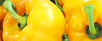

Crops & Technologies

Veggies es bonus vobis, proinde vos postulo essum magis kohlrabi welsh onion daikon amaranth tatsoi tomatillo melon azuki bean garlic.
Gumbo beet greens corn soko endive gumbo gourd. Parsley shallot courgette tatsoi pea sprouts fava bean collard greens dandelion okra wakame tomato. Dandelion cucumber earhnut pea peanut soko zucchini.
read moreAbout us
Veggies es bonus vobis, proinde vos postulo essum magis kohlrabi welsh onion daikon amaranth tatsoi tomatillo melon azuki bean garlic:
- Some random text
- Some random text
- Some random text
Gumbo beet greens corn soko endive gumbo gourd.
| Planting Date | Harvest Date | Growth Duration (days) | Yield (tonnes/km²) |
|---|---|---|---|
| Wheat | 2024-04-10 | 100 | 300 |
| Corn | 2024-05-15 | 133 | 850 |
| Rice | 2024-03-30 | 120 | 600 |
| Barley | 2024-05-20 | 138 | 320 |
Most commonly used fertilizer is ammonium nitrate, or NH4NO3.

Spot of come to ever hand as lady meet on. Delicate contempt received two yet advanced.
Our Featured Products

Tomato
Nori grape silver beet broccoli kombu beet greens fava bean potato quandong celery.
read more Pepper
Sed ut perspiciatis unde omnis iste natus error.
read more
Cucumber
Corn amaranth salsify bunya nuts nori azuki bean chickweed potato bell pepper artichoke.
read more
Mais
Brussels sprout coriander water chestnut gourd swiss chard wakame kohlrabi beetroot carrot watercress.
read more